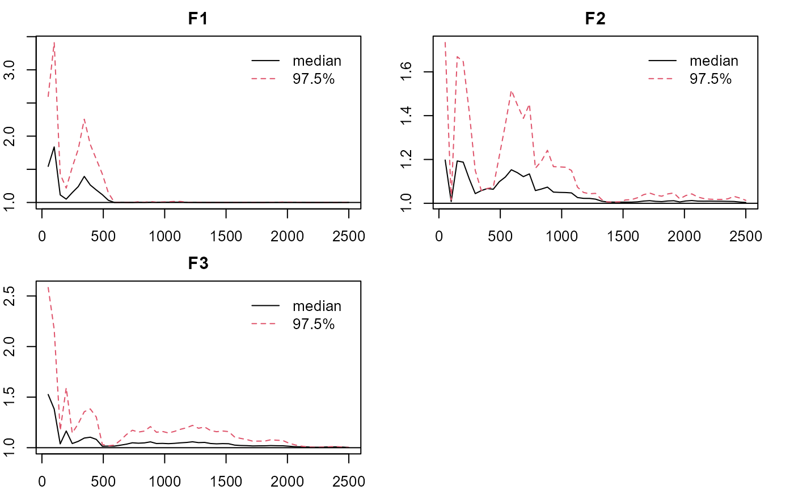

pcirm-examples
Jinsong Chen
2022-05-15
Source:vignettes/Examples/pcirm-examples.Rmd
pcirm-examples.RmdNote: the estimation process can be time consuming depending on the computing power. You can same some time by reducing the length of the chains.
Dichotomous Data with Local Dependence and Minor Trait:
- Load the package, obtain the data, check the true loading pattern (qlam) and no. of factors/traits.
## LAWBL Package (version 1.5.0; 2022-05-13)
## For tutorials, see https://jinsong-chen.github.io/LAWBL/
dat <- sim24ccfa21$dat
head(dat)## [,1] [,2] [,3] [,4] [,5] [,6] [,7] [,8] [,9] [,10] [,11] [,12] [,13] [,14]
## [1,] 2 1 2 2 1 2 1 1 1 1 1 1 2 1
## [2,] 1 1 1 1 1 1 1 1 1 2 1 1 1 1
## [3,] 1 1 1 1 1 1 1 1 2 2 2 2 1 2
## [4,] 2 2 2 1 2 2 2 2 2 1 1 1 1 1
## [5,] 1 2 1 1 1 1 1 1 1 1 2 1 1 2
## [6,] 1 2 1 1 1 1 2 1 2 1 1 1 2 2
## [,15] [,16] [,17] [,18] [,19] [,20] [,21] [,22] [,23] [,24]
## [1,] 1 1 2 2 1 2 2 2 1 2
## [2,] 2 1 1 1 1 2 1 2 1 2
## [3,] 2 2 2 2 2 2 2 1 1 2
## [4,] 1 1 2 1 1 2 1 1 2 2
## [5,] 1 1 1 2 1 1 1 1 1 1
## [6,] 2 2 1 1 1 2 1 2 2 2
J <- ncol(dat) # no. of items
qlam <- sim24ccfa21$qlam
qlam## [,1] [,2] [,3] [,4]
## [1,] 0.7 0.0 0.0 0.00
## [2,] 0.7 0.0 0.0 0.00
## [3,] 0.7 0.0 0.0 0.00
## [4,] 0.7 0.0 0.0 0.00
## [5,] 0.7 0.0 0.0 0.00
## [6,] 0.7 0.0 0.0 0.00
## [7,] 0.7 0.0 0.0 0.00
## [8,] 0.7 0.0 0.0 0.00
## [9,] 0.0 0.7 0.0 0.00
## [10,] 0.0 0.7 0.0 0.00
## [11,] 0.0 0.7 0.0 0.00
## [12,] 0.0 0.7 0.0 0.00
## [13,] 0.0 0.7 0.0 0.00
## [14,] 0.0 0.7 0.0 0.00
## [15,] 0.0 0.7 0.0 0.55
## [16,] 0.0 0.7 0.0 0.55
## [17,] 0.0 0.0 0.7 0.00
## [18,] 0.0 0.0 0.7 0.00
## [19,] 0.0 0.0 0.7 0.00
## [20,] 0.0 0.0 0.7 0.00
## [21,] 0.0 0.0 0.7 0.00
## [22,] 0.0 0.0 0.7 0.00
## [23,] 0.0 0.0 0.7 0.55
## [24,] 0.0 0.0 0.7 0.55
K <- ncol(qlam) # no. of factors- PCIRM with primary loadings and three traits specified. Longer chain is suggested for stabler performance (burn=iter=5,000 by default).
ipf <- 8
Q<-matrix(-1,J,K-1); # -1 for unspecified items
Q[1:8,1]<-Q[9:16,2]<-Q[17:24,3]<-1
Q## [,1] [,2] [,3]
## [1,] 1 -1 -1
## [2,] 1 -1 -1
## [3,] 1 -1 -1
## [4,] 1 -1 -1
## [5,] 1 -1 -1
## [6,] 1 -1 -1
## [7,] 1 -1 -1
## [8,] 1 -1 -1
## [9,] -1 1 -1
## [10,] -1 1 -1
## [11,] -1 1 -1
## [12,] -1 1 -1
## [13,] -1 1 -1
## [14,] -1 1 -1
## [15,] -1 1 -1
## [16,] -1 1 -1
## [17,] -1 -1 1
## [18,] -1 -1 1
## [19,] -1 -1 1
## [20,] -1 -1 1
## [21,] -1 -1 1
## [22,] -1 -1 1
## [23,] -1 -1 1
## [24,] -1 -1 1## $NJK
## [1] 1000 24 3
##
## $`Miss%`
## [1] 0
##
## $`LD Allowed`
## [1] TRUE
##
## $`Burn in`
## [1] 5000
##
## $Iteration
## [1] 5000
##
## $`No. of sig lambda`
## [1] 24
##
## $Selected
## [1] TRUE TRUE TRUE
##
## $`Auto, NCONV, MCONV`
## [1] 0 0 10
##
## $EPSR
## Point est. Upper C.I.
## [1,] 1.0008 1.0010
## [2,] 1.0036 1.0134
## [3,] 1.0021 1.0035
##
## $`No. of sig LD terms`
## [1] 7
##
## $`Cat Items`
## [1] 1 2 3 4 5 6 7 8 9 10 11 12 13 14 15 16 17 18 19 20 21 22 23 24
##
## $`max No. of categories`
## [1] 2
##
## $Time
## user system elapsed
## 228.03 22.64 251.41
summary(m0, what = 'qlambda')## 1 2 3
## I1 0.7401 0.0000 0.0000
## I2 0.6990 0.0000 0.0000
## I3 0.6408 0.0000 0.0000
## I4 0.6949 0.0000 0.0000
## I5 0.6664 0.0000 0.0000
## I6 0.7253 0.0000 0.0000
## I7 0.7471 0.0000 0.0000
## I8 0.7614 0.0000 0.0000
## I9 0.0000 0.7038 0.0000
## I10 0.0000 0.7148 0.0000
## I11 0.0000 0.6985 0.0000
## I12 0.0000 0.6798 0.0000
## I13 0.0000 0.6763 0.0000
## I14 0.0000 0.6705 0.0000
## I15 0.0000 0.7134 0.0000
## I16 0.0000 0.6973 0.0000
## I17 0.0000 0.0000 0.6831
## I18 0.0000 0.0000 0.7243
## I19 0.0000 0.0000 0.6882
## I20 0.0000 0.0000 0.7259
## I21 0.0000 0.0000 0.7107
## I22 0.0000 0.0000 0.7003
## I23 0.0000 0.0000 0.7083
## I24 0.0000 0.0000 0.7604
summary(m0, what = 'offpsx') #summarize significant LD terms## row col est sd lower upper sig
## [1,] 8 7 0.1151 0.0422 0.0332 0.1962 1
## [2,] 16 15 0.1556 0.0589 0.0206 0.2634 1
## [3,] 23 15 0.1421 0.0539 0.0268 0.2473 1
## [4,] 24 15 0.1256 0.0508 0.0193 0.2210 1
## [5,] 23 16 0.1269 0.0527 0.0104 0.2201 1
## [6,] 24 16 0.1170 0.0502 0.0107 0.2087 1
## [7,] 24 23 0.1410 0.0517 0.0287 0.2344 1
summary(m0,what='int')## est sd lower upper sig
## I1 0.0032 0.0274 -0.0517 0.0540 0
## I2 -0.0132 0.0292 -0.0723 0.0424 0
## I3 0.0034 0.0295 -0.0538 0.0611 0
## I4 0.0031 0.0281 -0.0514 0.0580 0
## I5 0.0094 0.0303 -0.0481 0.0715 0
## I6 -0.0298 0.0281 -0.0835 0.0255 0
## I7 0.0132 0.0276 -0.0409 0.0674 0
## I8 0.0148 0.0273 -0.0390 0.0674 0
## I9 0.0142 0.0283 -0.0400 0.0713 0
## I10 0.0070 0.0283 -0.0469 0.0634 0
## I11 -0.0122 0.0291 -0.0666 0.0467 0
## I12 -0.0138 0.0292 -0.0705 0.0448 0
## I13 0.0143 0.0295 -0.0451 0.0697 0
## I14 0.0200 0.0290 -0.0325 0.0801 0
## I15 -0.0155 0.0275 -0.0701 0.0383 0
## I16 -0.0224 0.0280 -0.0764 0.0330 0
## I17 0.0017 0.0288 -0.0549 0.0578 0
## I18 -0.0189 0.0282 -0.0736 0.0368 0
## I19 0.0058 0.0290 -0.0521 0.0606 0
## I20 -0.0153 0.0273 -0.0681 0.0377 0
## I21 0.0259 0.0290 -0.0300 0.0828 0
## I22 -0.0126 0.0288 -0.0673 0.0471 0
## I23 -0.0161 0.0276 -0.0710 0.0368 0
## I24 -0.0056 0.0263 -0.0546 0.0471 0
summary(m0,what='eigen')## est sd lower upper sig
## F1 4.1119 0.2879 3.5091 4.6479 1
## F2 3.9630 0.2964 3.4071 4.5668 1
## F3 4.1580 0.2918 3.6215 4.7397 1
#plotting factorial eigenvalue
plot_lawbl(m0) # trace
plot_lawbl(m0, what='density') #density
plot_lawbl(m0, what='EPSR') #EPSR
- PCIRM-LI with four traits and two cross-loadings specified based on results from previous step. Longer chain is suggested for stabler performance.
Q<-cbind(Q,-1);
Q[c(15:16),K] <- 1
m1<-pcirm(dat = dat,Q= Q,LD = FALSE, cati = -1,burn = 5000,iter = 5000)
summary(m1)## $NJK
## [1] 1000 24 4
##
## $`Miss%`
## [1] 0
##
## $`LD Allowed`
## [1] FALSE
##
## $`Burn in`
## [1] 5000
##
## $Iteration
## [1] 5000
##
## $`No. of sig lambda`
## [1] 28
##
## $Selected
## [1] TRUE TRUE TRUE TRUE
##
## $`Auto, NCONV, MCONV`
## [1] 0 0 10
##
## $EPSR
## Point est. Upper C.I.
## [1,] 1.0167 1.0265
## [2,] 1.0025 1.0129
## [3,] 1.0147 1.0696
## [4,] 1.0050 1.0126
##
## $`Cat Items`
## [1] 1 2 3 4 5 6 7 8 9 10 11 12 13 14 15 16 17 18 19 20 21 22 23 24
##
## $`max No. of categories`
## [1] 2
##
## $Time
## user system elapsed
## 115.90 11.33 127.55
summary(m1, what = 'qlambda') #close to qlam## 1 2 3 4
## I1 0.7341 0.0000 0.0000 0.0000
## I2 0.7015 0.0000 0.0000 0.0000
## I3 0.6375 0.0000 0.0000 0.0000
## I4 0.6867 0.0000 0.0000 0.0000
## I5 0.6591 0.0000 0.0000 0.0000
## I6 0.7113 0.0000 0.0000 0.0000
## I7 0.8232 0.0000 0.0000 0.0000
## I8 0.8346 0.0000 0.0000 0.0000
## I9 0.0000 0.7049 0.0000 0.0000
## I10 0.0000 0.7381 0.0000 0.0000
## I11 0.0000 0.7209 0.0000 0.0000
## I12 0.0000 0.7141 0.0000 0.0000
## I13 0.0000 0.6902 0.0000 0.0000
## I14 0.0000 0.6970 0.0000 0.0000
## I15 0.0000 0.6437 0.0000 0.6015
## I16 0.0000 0.6327 0.0000 0.5646
## I17 0.0000 0.0000 0.6956 0.0000
## I18 0.0000 0.0000 0.7454 0.0000
## I19 0.0000 0.0000 0.7061 0.0000
## I20 0.0000 0.0000 0.7480 0.0000
## I21 0.0000 0.0000 0.7221 0.0000
## I22 0.0000 0.0000 0.7098 0.0000
## I23 0.0000 0.0000 0.6911 0.4634
## I24 0.0000 0.0000 0.7487 0.4215- PCIRM with four traits and four cross-loadings specified based on results from previous step. Longer chain is suggested for stabler performance.
## [,1] [,2] [,3] [,4]
## [1,] 1 -1 -1 -1
## [2,] 1 -1 -1 -1
## [3,] 1 -1 -1 -1
## [4,] 1 -1 -1 -1
## [5,] 1 -1 -1 -1
## [6,] 1 -1 -1 -1
## [7,] 1 -1 -1 -1
## [8,] 1 -1 -1 -1
## [9,] -1 1 -1 -1
## [10,] -1 1 -1 -1
## [11,] -1 1 -1 -1
## [12,] -1 1 -1 -1
## [13,] -1 1 -1 -1
## [14,] -1 1 -1 -1
## [15,] -1 1 -1 1
## [16,] -1 1 -1 1
## [17,] -1 -1 1 -1
## [18,] -1 -1 1 -1
## [19,] -1 -1 1 -1
## [20,] -1 -1 1 -1
## [21,] -1 -1 1 -1
## [22,] -1 -1 1 -1
## [23,] -1 -1 1 1
## [24,] -1 -1 1 1## $NJK
## [1] 1000 24 4
##
## $`Miss%`
## [1] 0
##
## $`LD Allowed`
## [1] TRUE
##
## $`Burn in`
## [1] 5000
##
## $Iteration
## [1] 5000
##
## $`No. of sig lambda`
## [1] 28
##
## $Selected
## [1] TRUE TRUE TRUE TRUE
##
## $`Auto, NCONV, MCONV`
## [1] 0 0 10
##
## $EPSR
## Point est. Upper C.I.
## [1,] 1.0322 1.1421
## [2,] 1.0632 1.2153
## [3,] 1.0789 1.3066
## [4,] 1.0231 1.0657
##
## $`No. of sig LD terms`
## [1] 1
##
## $`Cat Items`
## [1] 1 2 3 4 5 6 7 8 9 10 11 12 13 14 15 16 17 18 19 20 21 22 23 24
##
## $`max No. of categories`
## [1] 2
##
## $Time
## user system elapsed
## 225.78 20.65 247.14
summary(m2, what = 'qlambda')## 1 2 3 4
## I1 0.7478 0.0000 0.0000 0.0000
## I2 0.6998 0.0000 0.0000 0.0000
## I3 0.6393 0.0000 0.0000 0.0000
## I4 0.6822 0.0000 0.0000 0.0000
## I5 0.6698 0.0000 0.0000 0.0000
## I6 0.7111 0.0000 0.0000 0.0000
## I7 0.7565 0.0000 0.0000 0.0000
## I8 0.7651 0.0000 0.0000 0.0000
## I9 0.0000 0.7038 0.0000 0.0000
## I10 0.0000 0.7364 0.0000 0.0000
## I11 0.0000 0.7004 0.0000 0.0000
## I12 0.0000 0.7023 0.0000 0.0000
## I13 0.0000 0.6942 0.0000 0.0000
## I14 0.0000 0.6935 0.0000 0.0000
## I15 0.0000 0.6388 0.0000 0.5598
## I16 0.0000 0.6259 0.0000 0.5320
## I17 0.0000 0.0000 0.6928 0.0000
## I18 0.0000 0.0000 0.7265 0.0000
## I19 0.0000 0.0000 0.7032 0.0000
## I20 0.0000 0.0000 0.7420 0.0000
## I21 0.0000 0.0000 0.7019 0.0000
## I22 0.0000 0.0000 0.6972 0.0000
## I23 0.0000 0.0000 0.6333 0.5218
## I24 0.0000 0.0000 0.6926 0.4729
summary(m2, what = 'offpsx') #summarize significant LD terms## row col est sd lower upper sig
## 8.0000 7.0000 0.1118 0.0411 0.0369 0.1923 1.0000
summary(m2,what='int')## est sd lower upper sig
## I1 0.0028 0.0271 -0.0491 0.0562 0
## I2 -0.0142 0.0283 -0.0714 0.0402 0
## I3 0.0022 0.0300 -0.0559 0.0613 0
## I4 0.0008 0.0287 -0.0562 0.0547 0
## I5 0.0075 0.0293 -0.0499 0.0660 0
## I6 -0.0300 0.0286 -0.0876 0.0235 0
## I7 0.0135 0.0273 -0.0410 0.0664 0
## I8 0.0144 0.0271 -0.0394 0.0662 0
## I9 0.0133 0.0282 -0.0454 0.0654 0
## I10 0.0049 0.0273 -0.0476 0.0599 0
## I11 -0.0134 0.0283 -0.0670 0.0436 0
## I12 -0.0163 0.0286 -0.0717 0.0413 0
## I13 0.0132 0.0289 -0.0437 0.0700 0
## I14 0.0166 0.0285 -0.0407 0.0704 0
## I15 -0.0039 0.0211 -0.0461 0.0366 0
## I16 -0.0115 0.0218 -0.0555 0.0306 0
## I17 0.0013 0.0291 -0.0592 0.0562 0
## I18 -0.0202 0.0277 -0.0727 0.0347 0
## I19 0.0057 0.0284 -0.0500 0.0608 0
## I20 -0.0163 0.0276 -0.0699 0.0372 0
## I21 0.0257 0.0288 -0.0315 0.0799 0
## I22 -0.0130 0.0286 -0.0701 0.0428 0
## I23 -0.0050 0.0210 -0.0466 0.0361 0
## I24 0.0035 0.0202 -0.0360 0.0425 0
summary(m2,what='eigen')## est sd lower upper sig
## F1 4.1122 0.3008 3.5402 4.7300 1
## F2 3.8726 0.3338 3.2357 4.5355 1
## F3 3.9930 0.3381 3.2980 4.6429 1
## F4 1.1977 0.1729 0.8683 1.5547 1
#plotting factorial eigenvalue
plot_lawbl(m2) # trace
plot_lawbl(m2, what='density') #density
plot_lawbl(m2, what='EPSR') #EPSR